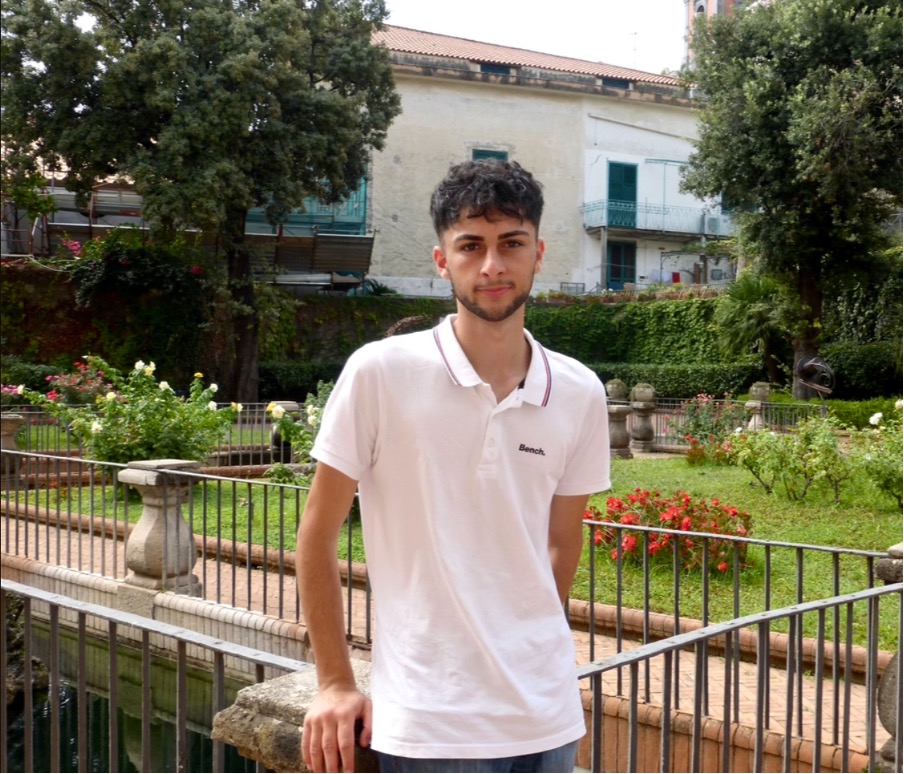

MSci Chemistry StudentGrowing Interest in Computational Chemistry & Drug Discovery
I'm an analytical chemistry student entering my second year at Bristol, with a growing focus on computational chemistry and structural biology, particularly how they apply to drug discovery. I like combining code with chemistry to work out how molecules and proteins actually behave, and I'm increasingly interested in how machine learning and AI are being used to speed up and improve drug discovery more broadly.
Outside of my formal placements, I built a full computational analysis of haemoglobin from scratch, starting by mapping its quaternary structure and allosteric transitions using Biopython, before extending the project to dock the drug Voxelotor into its binding site using Python and rendering the resulting complex in PyMOL, to see first hand how a molecule's structure dictates whether it can actually treat sickle cell disease.
My placements reflect that same interest in applying chemistry and computation to real therapeutic problems: ruthenium metal-DNA interactions with potential as cancer therapeutics at the University of Reading, an upcoming cancer biology placement at the University of São Paulo, and a feedback search tool built back at Bristol in between. I don't want to stay narrowly focused on one disease area though. I'm keen to explore drug discovery across different diseases and therapeutic areas, and I'm particularly drawn to where computational chemistry, computational biology, and machine learning are heading in that space as a whole.

Adrian Banyamin
MSci Chemistry with Year in Industry
Haemoglobin Computational Analysis
Personal ProjectHaemoglobin Structural Dynamics Analysis
Biopython · PDB 1A3N/1HHO · 3D Euclidean Distance
This module contains the computational pipeline developed to quantify the conformational transition of haemoglobin upon oxygen binding. By processing PDB structural data (1A3N deoxyhaemoglobin baseline and 1HHO oxyhaemoglobin), the pipeline maps precise sub-angstrom movements within the haem pocket, providing a quantitative bridge between static crystal structures and dynamic biophysical transitions. A key data engineering challenge involved incomplete coordinate data in 1HHO.pdb, which only explicitly records chains A and B; a dynamic routine was implemented to synthesise coordinate data for the C and D chains using the protein's internal symmetry relationships, ensuring a complete tetrameric analysis despite gaps in the raw structural data.
Key Contributions
- Parsed PDB coordinate files (1A3N, 1HHO) via Biopython to extract proximal histidine, distal histidine, haem ring, and iron atom geometries.
- Resolved incomplete 1HHO chain data by synthesising C and D subunit coordinates from the protein's internal symmetry.
- Calculated 3D Euclidean distances between proximal and distal histidine centres across all four subunits.
- Quantified significant structural contraction in three of four subunits (up to -0.37 Å), against one subunit falling below threshold.
- Related the measured contraction to the mechanical linkage driving the T-to-R quaternary transition.
Project Overview
My interest in structural biology and computational chemistry started with a simple question: how does a protein's shape encode its function? Haemoglobin became my way of exploring that hands-on, developed independently in my spare time alongside friends and peer connections. I began by quantifying the sub-angstrom mechanical shifts that drive haemoglobin's cooperative oxygen binding, then moved into structure-based drug design by mapping exactly how a real sickle cell therapeutic locks onto its target, and I am now extending the analysis into molecular dynamics to test whether that docked pose actually holds up once the system is allowed to move naturally.
Together, this progression reflects the kind of end-to-end computational chemistry and structural biology work I want to bring to a research or industry placement: parsing raw structural data, building rigorous quantitative pipelines, and connecting the results back to real therapeutic relevance.
What keeps me returning to this kind of work is that Protein Data Bank files are free for anyone to download, yet most of what they actually reveal only shows up once you sit down and analyse them properly. I wanted to prove to myself that a single motivated student, working independently without a formal laboratory, could take that open data all the way from raw atomic coordinates through to a genuine drug discovery insight. That is what drives my ambition to work in computational chemistry and structural biology within the pharmaceutical industry, where the same rigour and curiosity could be applied to real therapeutic pipelines at a much larger scale.
Haemoglobin Interaction Analysis and Molecular Documentation
PyMOL · Voxelotor · AutoDock Vina · PLIP
Voxelotor treats sickle cell anaemia by increasing haemoglobin's affinity for oxygen, stabilising the R state and inhibiting the polymerisation of deoxygenated haemoglobin responsible for red blood cell sickling. This module develops a computational workflow to dock Voxelotor against haemoglobin and characterise how it genuinely binds. Rather than relying on a broad geometric centroid, the docking grid was anchored precisely to the biological binding site, the nitrogen atom of the N terminal valine on the alpha chain, where Voxelotor forms its covalent bond.
Key Contributions
- Developed custom Biopython scripts to parse structural data from the 1HHO protein and the Voxelotor ligand.
- Programmatically identified the exact N terminal valine binding site rather than a general pocket centroid.
- Rendered 3D docking visualisations of the Voxelotor haemoglobin interaction in PyMOL.
- Docked Voxelotor with AutoDock Vina, obtaining a best pose binding affinity of -6.9 kcal/mol across nine candidate poses.
- Profiled the resulting complex with PLIP, identifying six hydrogen bonding residues, five hydrophobic contacts, and one pi cation interaction.
Molecular Dynamics Validation of the Docked Complex
OpenMM · Molecular Dynamics · Pose Stability
Docking gives a single static best-guess pose for how Voxelotor sits in the binding site, scored by a fixed geometric function, but it says nothing about whether that pose actually holds up once the system is allowed to move naturally. This module extends the project into molecular dynamics using OpenMM, solvating the docked complex and simulating its behaviour over time to test whether the ligand stays anchored at the N-terminal valine site or drifts, and which of the hydrogen bonds and hydrophobic contacts identified by PLIP in Part 2 genuinely persist versus which were artefacts of a single static snapshot.
I have only just started this part of the project, and this page will be updated with real results as the simulation and analysis are completed.
Current Focus
- Beginning molecular dynamics simulation of the docked complex using OpenMM.
- Setting up force field parameters for the protein and for Voxelotor itself, and solvating the system in an explicit water box.
- Working towards a production simulation run, following energy minimisation and equilibration.
- Planning to analyse RMSD and RMSF to test pose stability and pocket flexibility over time.
- Aiming to check which PLIP-identified contacts from Part 2 persist across the simulation versus which do not.
Research Internships
Cancer Research Intern
University of São Paulo (USP), São Paulo, Brazil
- Confirmed incoming computational and biochemistry research placement focusing on molecular mechanisms of cellular abnormalities and therapeutic pathways, under the supervision of Prof. Alexandre Bruni-Cardoso.
- The core lab work will involve protein expression analysis, quantitative assay evaluations, and Western blotting to map cellular signalling targets in cancer biology.
- The computational side of the placement will likely involve bioimage analysis and Python based quantitative modelling, with the specifics depending on the lab's needs once underway.
- Plan to bring in structural bioinformatics tools such as PyMOL and Biopython to evaluate protein structure where relevant.
This placement came about after I emailed Prof. Alexandre Bruni-Cardoso directly, having read into his lab's research on cellular signalling and cancer biology. It gives me exposure to biomedical techniques such as Western blotting and protein expression analysis, alongside the computational and Python based work I already enjoy from my other placements. Building a broad grounding across the different disciplines that feed into drug discovery, from synthetic chemistry through to cell biology and computation, is something I want to keep developing.
Summer Bioinorganic Research Intern
University of Reading, Reading, UK
- Synthesised the ruthenium coordination complex [Ru(phen)2(dppz)]Cl2 via techniques including high-temperature reflux, microwave-assisted synthesis, and rotary evaporation, as a candidate DNA-targeting cancer therapeutic.
- Characterised the complex, [Ru(phen)2Cl2], Ru(DMSO)4Cl2, and dppz by thin-layer chromatography (TLC) and multinuclear NMR spectroscopy, with high-resolution mass spectrometry (HRMS) still to commence.
- Resolved the complex into its Δ and Λ enantiomers via HPLC, then used UV-Vis spectrophotometry to standardise both enantiomer solutions to a working concentration of 200 μM.
- Investigated enantiomer-selective DNA binding by monitoring luminescence intensity of each enantiomer in the presence of B-DNA and G-quadruplex structures, to assess binding affinity and selectivity.
- Grew single crystals of each enantiomer to support X-ray crystallographic structure determination, still to commence, and applied PyMOL and custom Python scripts to model complex geometry and coordination state.
- Collaborated across a week-long research exchange with 15 visiting researchers, including international collaborators such as Dr. Shuntaro Takahashi and Dr. Hisae Tateishi-Karimata, evaluating ruthenium-complex characterisation data and reaction optimisation strategies.
- Attended weekly technical meetings with senior professors and peers to review structural analysis updates and troubleshoot reaction issues, with contributions slated for forthcoming peer-reviewed publication.
At the University of Reading, I carried out a bioinorganic chemistry research placement focused on synthesising and characterising ruthenium-based transition-metal coordination complexes. The broader aim of the project was to develop ruthenium complexes that could be structurally modified to selectively target DNA, particularly the major and minor grooves, as a potential route to disrupting the uncontrolled cell division characteristic of cancer. Working closely alongside a PhD researcher and senior faculty, I contributed across the synthetic and analytical pipeline, from initial synthesis through to structural characterisation and computational modelling.
Summer Systems Architecting Intern
University of Bristol, Bristol, UK
- Built a prototype Python command-line tool to search departmental feedback by keyword, date, category, and module, tested against an example data set of 15–25 entries I created myself, to demonstrate faster retrieval than manually opening folders.
- Built the underlying Python indexing engine from scratch, using a representative example data set modelled on how real departmental feedback is structured, as a proof of concept for a possible future central tool for Blackboard or another Bristol SU platform.
- Designed and developed interactive tutorial games aimed at improving student engagement and participation during departmental tutor group meetings.
- Worked directly with departmental staff to scope requirements, translating a general request for easier feedback access into a concrete command-line search tool concept built to sit alongside the existing Blackboard environment.
- Attended weekly tutorial meetings with team professors, presenting live research code, GitHub repositories, and PowerPoint slides to show progress on the tool and what the feedback data was actually pointing to.
- Tested early versions of the tool with real staff members and iterated on it based on their feedback, prioritising something non technical colleagues could pick up without training.
- Collaborated with team members to test, debug, and refine tutorial engagement strategies, translating student feedback metrics into actionable improvements.
This internship centred on building a Python based command-line search tool from scratch, to solve a problem I had run into myself: finding a single piece of past feedback on Blackboard meant manually digging through year after year of folders, scrolling past unrelated files just to track down one comment. The tool was built around a custom Python indexing engine, designed so non-technical staff could search feedback by keyword, date, category, and module without training. Alongside the development work, I worked directly with tutor groups, designing engagement activities and sessions so that feedback was more likely to be read and acted on in the first place, not just easier to search for after the fact.
Beyond the Lab
Private Chemistry Tutor
Self-Employed, Bristol, UK
Student Ambassador
University of Bristol, Bristol, UK
Tools and Capabilities
Software, Analysis & Data
Research & Scientific Methodologies
Laboratory & Experimental Techniques
University & Academic Competencies
Leadership & Professional Skills
Education
MSci Chemistry (with Year in Industry)
2025 - Present | Bristol, United Kingdom
First Class Honours (Year 1): Achieved an overall average grade of 80%, with modules including Materials Chemistry, Biochemistry, and Advanced Experimental Laboratory Techniques, plus an overall average of 94% across all mathematics coursework and examinations.
A-Levels: A*AA
2023 - 2025 | Bracknell, United Kingdom